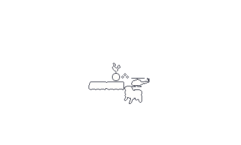
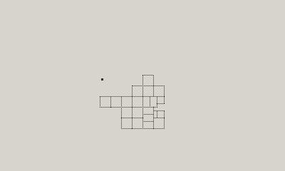
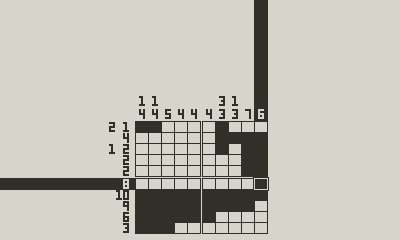

In 006-progress-on-collage and 003-lean-into-it I mentioned that I was planning on showing outlines for each puzzle. I think the outlines looked pleasing.

However, it dawned on me that the outlines would actually be a bit of an issue, because I’d be giving the player a head start on the puzzle. They’d know the shape of the puzzle before even opening the puzzle!
So, I’m changing the approach a little bit. Or, not moving forward with the outline work.
I’ve got this working how I think it should be, where I show a box for every puzzle that the player hasn’t uncovered yet:

When you solve a puzzle, the outline won’t show, unless the cursor is over it. It also won’t say the prize name until you solve all of puzzles for a given prize! Whenever that happens, it’ll animate all sections of the puzzle towards the middle of the screen, display the prize name, then go straight back to the ‘view prize’ state.

I’m getting close to publishing a new build of the game to get feedback, but I do do need to iron out some of the puzzles before that. Since I changed the idea from ‘solving a portion of the prize’ to ‘solving each piece of the collage’, I now have many puzzles that have more than one solution, which isn’t good.
I should really take the time and build a solver into my workflow. Maybe an Aseprite plugin that does it on save, that would be cool. Or I could do it at build time. Need to think through the options and weigh each of them.